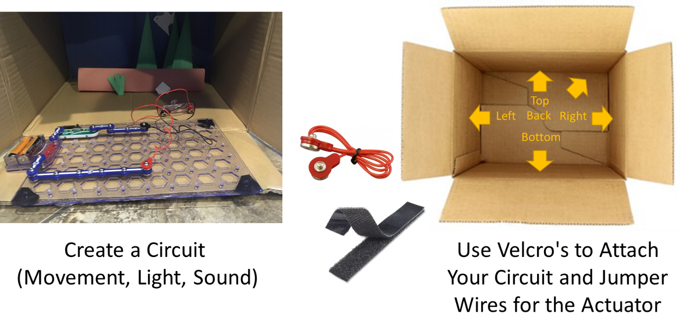

Understand Features of Static and Current Electricity
Description
A Literature MakerSpace activity that combines electrical circuits with digital storytelling. Students imagine alternate outcomes to narratives and retell their own stories by incorporating sounds, lights, and movements created using components of their electrical circuits.
Standard 4.2: Analyze the Behavior of Current Electricity
- Draw and label the components of a complete electrical circuit that includes switches and loads (e.g., light bulb, bell, speaker, motor)
- Predict the effect of changing one or more of the components (e.g., battery, load, wires,) in an electric circuit
- Generalize the properties of materials that carry the flow of electricity using data by testing different materials
- Investigate materials that prevent the flow of electricity
- Make a working model of a complete circuit using a power source, switch, bell or light, and a conductor for a pathway
Language science students should use: Language science students should use: battery, complete circuit, incomplete circuit, current, conductor, insulator, pathway, power source, attract, compass, electromagnetism, magnetic force, magnetic field, natural magnet, permanent magnet, properties, repel, static electricity, temporary magnet, switch, load
Suggested Lesson Structure
- Demonstrate and Review Electrical Circuits (1 hour)
- This Is Not My Hat Read Aloud (1 hour)
- Literature MakerSpace - Project Development(1 hour)
- Retelling This Is Not My Hat (1 hour)
- Literature Makerspace - Project Filming (1 hour 30 min)
Demonstrate and Review Electrical Circuits (1 hour)
- Review: Electrical Circuits (10 minutes)
- Identifying Sensors, Actuators, and Conductors (30 minutes)
- Assembling Your Own Circuit (20 minutes)
Review: Electrical Circuits (10 minutes)
Note: This activity reviews the components of electrical circuits and lays the foundation for today’s task of assembling their own working model.
Last week you spent time learning about circuits. What do you remember about circuits?
Note: List student responses on the board
Identifying Sensors, Actuators, and Conductors (20 minutes)
Materials: Powerpoint slide presentation; Snap Circuits Jr. 100 kit (1 per 4 students); 2 AA batteries per group (Distribute batteries after the demonstration)
Note: This activity builds on their knowledge of electrical circuits by introducing several different types of components
T: Today we are going to build on your knowledge of circuits by creating a circuit that will light up an LED light bulb. We will be doing this in a few different ways. How this will work today is that I will demonstrate what we will do, and then you will have the opportunity to work with your group to do the same thing. I need you to pay careful attention to the instructions as we go so as we can be careful with our circuit materials.
Note: Demonstrate how to create a basic circuit that lights up one LED bulb and explain how it works with each piece that is connected.
T: A conductor is an object or type of material that allows the flow of charge (electrical current) in one or more directions. Devices which perform an “Input” function are commonly called Sensors because they “sense” a physical change in some characteristic that changes in response to some excitation, for example heat or force and convert that into an electrical signal. Devices which perform an “Output” function are generally called Actuators and are used to control some external device, for example movement or sound.
T: (Show the electric light and switch example) When you close the slide switch (sensor), current flows from the batteries through the lamp and back to the battery through the switch. The closed switch completes the circuit – this is called a closed circuit. When the slide switch is opened, the current can no longer flow back to the battery, so the lamp goes out – also called an open circuit.
T: You can practice on your own by trying to assemble the circuit and lighting the lamp by pressing the slide switch.
Figure 1. Electric light and switch
S: Students practice assembling the circuit in their own group and lighting the lamp.
Notes: Elaborate further with additional examples of actuators.
T: When you close the slide switch (S1), current flows from the batteries (B1) through the motor (M1) making it rotate. Place the fan blade on the motor shaft and close the slide switch. DC motors are used in all the battery powered equipment requiring rotary motion, such as drills, electric toolbrush, and toy trains that run on batteries.

Figure 2. DC Motor and switch
S: Students practice assembling the circuit in their own group and spinning the motor.
T: When you close the slide switch (S1), the circuit (U2) should start sounding an up-down siren. Switch the sound on and off quickly and see if you can create even different effects.

Figure 3. Sound activated switch
S: Students practice assembling the circuit in their own group and listening to the alarm
T: Try adding and replacing the different types of sensors. Clap your hands close to the whistle chip (WC) or tab the base with your finger. Press and hold the press switch (S2) several times. Move your hand over the photoresistor (RP) and wave it.

Figure 4. Types of sensors
S: Students practice assembling the circuit in their own group and replacing sensors.
T: Some materials can carry the flow of electricity better than others. Try a paper clip for example, see if it can close the circuit. When you place a metal paper clip across the terminals, current flows from the batteries (B1) through the alarm, and back to the battery. The paper clip completes the circuit and current flows through the alarm. Place your fingers across the terminals and the LED does not light. Your body has too high a resistance to allow enough current to flow to light the LED. If the voltage (electrical pressure) would be higher, then current could be pushed through your fingers and the LED would light.
Figure 5. Conductive materials
S: Students practice assembling the circuit in their own group and replacing materials.
Assembling Your Own Circuit (30 minutes)
Materials: Snap Circuits Jr. 100 kit (1 per 4 students); 2 AA batteries per group (Distribute batteries after the demonstration); Electronic Snap Circuits Instruction Manual (Experiments 1-101)
Note: This activity builds on their knowledge of electrical circuits by letting them explore different possibilities within their own groups
T: Now that we’ve reviewed a few examples, I would like you to open the instruction manual on your tables. There are different projects described in the manual, note down the number of the project that you would like to try and review the diagram and instructions. Try assembling the circuit and raise your hand if you have any questions or would like some help.
S: Students practice in groups on how to assemble their own circuit by studying examples in the manual
This Is Not My Hat Read Aloud (1 hour)
- Read Aloud (30 minutes)
- Review of Circuit Components (20 minutes)
- Fill Out Graphic Organizers (10 minutes)
Read Aloud (30 minutes)
Materials: Big Book of This is Not My Hat? (Wikipedia); 10 copies of This is Not My Hat ; Graphic Organizer for brainstorming; Lined paper for retelling the story
Note: Students sit at the rug or in assigned groups to listen to the story. Students set up in groups with materials.
T: (Show the book) Has anyone read this book before? Looking at the cover and reading the title, what do you think it will be about?”
T: Today we are going to read this story and discuss it together. Then you will spend some time working with your same group from yesterday to think about how you might change the story.
Note: Insert places to stop and ask questions - “What do you think happened?”; “Let’s brainstorm together about how we could change the outcome of the story. What are some ways that we could change what happens?”
Review of Circuit Components (15 minutes)
Note: This activity is meant to review their understanding of actuators and how these can tie into their narratives for an alternative outcome to the story.
T: Yesterday we learned about how circuits have actuators to create sounds, light, or movement. Let’s talk about how those events could be used to change the story.
T: Imagine that the big fish heard a sound or noise - How could the outcome of the story been different?
T: Imagine that the big fish saw a light - How could the outcome of the story been different?
T: Imagine that the big fish felt something move - How could the outcome of the story been different?
Note: Prompt them with follow up questions - Where was the noise coming from? Is it loud? What the small fish do?
Fill Out Graphic Organizers (15 minutes)
T: Now we have to figure out where in the story we could make our changes so that the outcome will be different. To do this, let’s map out the story on a plot diagram. Have you all seen a plot diagram like this before? (Review components of the diagram)
T: What happens first? What do you think the climax of the story is?
S: Write in their group what happened in the story
T: (Reads aloud and writes on the board) With your group, create something that would change the outcome of this story. Think about how you can use either light, sound, or movement to change the outcome of the story.
S: Using the graphic organizer, students discuss and record how they could change the outcome of the story:
- Write down the point(s) within the story where the lights would be used/occur.
- Write down how the story would then differ, and thus cause a different outcome from the original after this point (tell the new version of the story starting from the point of change).
- Fill out the plot diagram of their new story.
Notes: Questions to prompt student groups - What would the new outcome be? How would this happen? What creation is needed to change to the plot to achieve this new outcome? At what point in the story does the creation come in to play? Do characters use this new device? Does a new setting occur? Does the changed outcome affect the mood and theme of the original setting?
Literature MakerSpace - Project Development (1 hour)
- Review Graphic Organizers (10 minutes)
- Literature MakerSpace Activity (50 minutes)
Review Graphic Organizers(10 minutes)
Materials: Scenery demo PowerPoint presentation, 10 copies of This is Not My Hat, Construction paper, Dowels, Paint, Glue, Scissors, Fish character cutouts, Boxes, Circuit Materials, Velcro strips/dots, Other devices
Note: Students set up with materials in group. The purpose of this activity is for students to familiarize themselves with their plan for retelling the story. Furthermore, the activity is also meant to help them think through their own plans in preparation for the MakerSpace activity where they will start building the scenery to retell the story.
T: Yesterday we learned about how light, sound, and movement can change the outcome of the story. Let’s spend a few moments reviewing your graphic organizer. By the end of today, you all should have some ideas in your group on what components in your circuit will be used to create either light, sound, or movement in order to retell the story in This is Not My Hat.
S: Students review their graphic organizer and discuss their plan.
T: What questions do you have about creating the scenery and characters or developing your retelling? What questions do you have about creating the devices you will use to change the outcome of the story?
MakerSpace Activity (50 minutes)
T: Today we will begin working on the scenery for retelling your story. To do this, you can use the supplies and materials that are available at each table. We will do this in 3 steps:
T: First, we will add a scenery to your box
Figure. Add Scenery
T: Second, we will create a circuit that will create the movement, light, or sound that we want to incorporate in our story. Add the circuit to any sides of your box using velcro for the circuit board. Remember that you can move the actuator using the jumper cables.
Figure. Add Circuit
T: Third, we will video record your retelling the story and edit the video using Adobe Spark Video.
Figure. Video Record Retelling the Story
Note: Show video example of the final step in the process.
T: Let’s start working on the scenery. If you need help, raise your hands and we can come around and help you. Once you have set up your box, move ahead to building your own circuit or practice retelling the story by writing what you will say and at what moment you want to incorporate light, sound, or movement.
Retelling This Is Not My Hat (1 hour)
- Read Aloud (30 minutes)
- Literature MakerSpace Activity (30 minutes)
Read ALoud(30 minutes)
Materials: Scenery demo PowerPoint presentation, 10 copies of This is Not My Hat, Construction paper, Dowels, Paint, Glue, Scissors, Fish character cutouts, Boxes, Circuit Materials, Velcro strips/dots, Other devices
Notes: The purpose of this activity is for students to think critically about their own retelling by analyzing and applying notions related to author style.
T: Today we are going to reread this story and discuss the way the author uses language in the story. Then you will spend some time working with your same group to revise writing your retelling of the story using some of the same techniques the author uses.
T: (Begins reading the book aloud) Before we begin reading, can anyone tell me what style means? So what do you think author’s style means?
T: Author’s style is the way the author uses words and constructs sentences to tell the story. Sometimes authors like to use really long sentences. [Show example.] Sometimes authors like to use very short sentences. [Show example.] Sometimes authors use lots of descriptive words to create vivid images for their readers to see in their minds. [Show example.] And sometimes authors don’t give as many details so readers can imagine the story on their own. [Show example.] Today while we read, I want you to pay attention to the words and sentences that Jon Klassen uses to tell the story.
Notes: Rely on several instructional strategies for them to understand author's style and how it applies to their efforts to retell their stories
- Pause after page 4 and ask: “What do you notice about the sentences the author is using so far?” Are they long or short?
- Pause after page 12 and ask: “What do you notice about the sentences in these pages? Are there any patterns that you notice? Are any words used over and over again? Which ones?”
- Pause after page 18 and ask: “What have you been noticing about the words the author uses? Does he give us lots of details or does he let us imagine the story on our own?”
- Model some of the style and devices the author uses. Ask students to try some of them out on lined paper or a graphic organizer.
- And even if ______________________, he probably ________________________.
- But I will _________________________.
- So I ________________________________.
T: With your group, revise writing your retelling of the story and implement some of the style and devices the author uses into your writing.
Notes: Begin to revise their retelling by visiting each group and prompting them to incorporate the style and devices of the author (e.g., What part of the new story did you like? What part of the new story did you want more information or details? Does the retelling feel like it fits with the author’s writing?). Share their retelling with another group and get feedback (if time permits).
MakerSpace Activity (30 minutes)
T: Great work everyone, your stories are really moving along. Let’s spend the remaining time to go through our steps for retelling the story: (1) Create the scenery, (2) Add the circuit, and (3) Preparing the retelling of the story for video recording.
Note: Continue work on their MakerSpace activity. Help them with creating the background, cutting out their characters, attaching the circuit board and actuator, plan how the circuit will be incorporated in the retelling of the story, and so on.
Literature MakerSpace - Project Filming (1 hour 30 minutes)
Materials: PowerPoint Adobe Spark Video, 10 iPads, 10 copies of This is Not My Hat, Construction paper, Dowels, Paint, Glue, Scissors, Fish character cutouts, Boxes, Circuit Materials, Velcro strips/dots, Other devices
Notes: The goal of this activity is to familiarize students with how to record and edit a video using Adobe Spark Video.
T: Yesterday you continued working on your MakerSpace. Hopefully, you are close to being finished. Today we are going to finish creating our MakerSpace. You will have some more time to practice your retelling and then you will record it using an iPad.
T: (Show the PowerPoint slides for Adobe Spark Video) Here is how you can use the iPad to edit your video using an app called Adobe Spark Video.
Notes: Using Camera at a Glance to record photos and videos, all are saved in the Camera Roll app. Take still images and video clips and upload them to Adobe Spark Video to retell your story by recording your voice over narration.
T: Let’s take the remaining time to finish our work, just let me know whether you have any questions or need some help with recording your video.